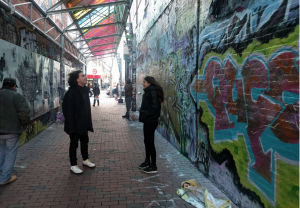

Team Rainbow is Sam, Jade, Aditi, & Kathy.
Our interviews were all sourced from the Boston/Cambridge area; this inspired our team to create a place-specific installation. Our aim with this project is to reveal the voices of Boston area youth activists, whose work and ideas might ordinarily go unnoticed by local strangers. The audio clips answer questions like, “What does the 2030 future look like, ideally?” and “How will we get there?” All questions that these people can answer with a sense of imagination, logic, and hope.
The tone of the audio tracks is optimistic and action-oriented. For instance, Gabby Ballard of MIT urges people to have conversations. In her interview, she notes,
“We have to educate ourselves… Privilege comes in many different ways. Having these conversations come with being open to your own vulnerabilities. Giving people room to make mistakes. Even if you are offended and angry.”
Our team initially banded together because we were all interested in creating a site-specific installation. We chose the Graffiti Alley in Central Square, Cambridge, because of how inspiring it is as a site of community conversation.

People walk by the space during all hours of the day; it’s very visible and is constantly updated, painted over, and admired. We noticed how thick the spray paint was– you could peel off parts and still, you would be more than a centimeter from the underlying brick. Having a space where a variety of people walk into is important to our goal for our project. We want diverse responses and ideas in order to send messages to the public; what is really important in the world? Or, what means the world to one individual?
For us, it was important that we created dialogue, instead of just passive listening. For this reason, Central Square also seemed like the perfect location. During our first meeting, we explored the site. We noticed how frequently people came through, and we discovered funny artifacts hidden in the walls.

We got excited when we saw these small, sculpted faces embedded in the wall– something you normally wouldn’t see if you were walking through quickly. We thought, What if they spoke to you as you passed? We could invite people to slow down, listen, and be curious.
With this form factor, we could reinforce that these voices came from local people who shared the same city spaces as you. We imagined many more faces— planted along the walls at various heights, so that many ages and differently-abled people could hear easily. Initially, we were interested in creating molds of young childrens’ faces, to echo our theme of “building 2030 futures.”
{kind=link}
Our first prototype is mounted on a 19” plywood disk, which would be accompanied by a Sharpie to invite people’s thoughts and responses. We used a plastic party mask and Bluetooth speaker to simulate the “talking heads” effect we wanted.
If we were to continue this project, we would test our prototype in the space itself. How might people react to it? How would people want to dialogue with the piece, and would they feel comfortable writing or drawing? In the future, we would love more realistic face molds that represent the diverse demographics of our city.